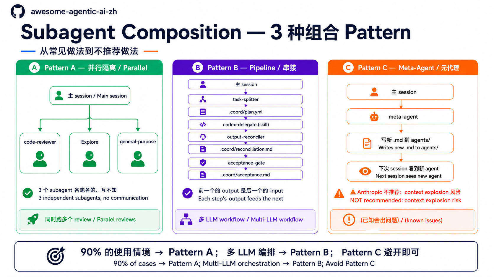

原课程本地核对资料，保留原内容与顺序。外链已改为本地阅读入口。命令中的原仓库路径请按本课运行指南换成实际位置；版本差异见本课说明。MIT © 2026 Wenyu Chiou。
Subagent 进阶使用 — Description 写法 / Composition / Debug
📋 这份是给谁看的：你已经会用内置 subagent（Stage 5.5 + cookbook 走完了），准备：(1) 自己写一个 subagent、(2) 组合多个 subagent，或 (3) debug 跑坏的 subagent。
⚠️ 先决条件：读完 Stage 5.5 §易混淆概念厘清 + cookbook 15 个 recipe 之后再来。没读 cookbook 直接看这份，会卡在“subagent 是什么”这一层。
怎么读这份文件
3 个独立的进阶主题，按需要查：
| 你的问题 | 看哪节 |
|---|---|
| 写了一个 subagent，但 Claude 从来不主动派遣它——为什么？ | §1 Description 怎么写才会被主 session 主动 spawn |
| 想跑 2-3 个 subagent 串成 pipeline / parallel——怎么设计？ | §2 Composition pattern 怎么设计 |
| subagent 跑坏 / 报错 / 行为跟设置的不一样——怎么 debug？ | §3 自制 subagent 的 debug 工具 |
每节独立，可以跳读。
§1 Description 怎么写才会被主 session 主动 spawn
主 session 怎么决定派遣哪个 subagent？看 .claude/agents/<name>.md 开头 frontmatter（frontmatter = 文件最开头的 YAML 设置区，用 --- 包起来）的 description 字段。写法影响被选概率——下面是 4 个常见 bug + 修正：
Bug 1: Description 太抽象，Claude 不知道何时派遣
❌ 坏写法：
description: A helpful code reviewer.
问题：“helpful”是空词，reviewer 是泛词。Claude 看不到“什么情境下我该派遣这个”，只能等用户明说名字。
✅ 改成（具体触发条件 + 范围）：
description: Use PROACTIVELY when the user has staged ≥ 50 lines of changes and is about to commit. Reviews staged diff for security issues, style violations, missing error handling, and test gaps. Returns per-category PASS/FAIL + concrete fix list.
为什么好：(1) PROACTIVELY 是强信号词，(2) 明确触发条件“staged ≥ 50 lines + about to commit”，(3) 列了会做的 4 件事，(4) 讲清楚返回格式。
Bug 2: 用了 PROACTIVELY，但条件太宽
❌ 坏写法：
description: Use PROACTIVELY for all code-related tasks.
问题：“all code-related”太宽，Claude 会在每个 coding task 都派遣——用户输入“fix this typo”也派 = 打扰。
✅ 改成（缩窄条件）：
description: Use PROACTIVELY when a commit is about to land that modifies authentication, database queries, or API routes — these are high-risk surface areas needing extra review.
为什么好：限定高风险范围（auth / DB / API），避免 over-trigger。
Bug 3: 完全没写 PROACTIVELY，只能被动等
❌ 坏写法：
description: Reviews code when asked.
问题：没有 PROACTIVELY——Claude 只会在用户明说“review this”时才派遣；如果用户没想到要 review，就漏掉了。
✅ 改成（加 PROACTIVELY + 触发场景）：
description: Code reviewer. Use PROACTIVELY when staged changes touch test files but the test count didn't increase — likely missing test coverage for new logic.
💡 被动 vs 主动的选择：
- 想 always-on safety net（例如安全 review）→ 用
PROACTIVELY+ 明确 trigger- 只在用户明说要求才跑（例如比较费 token 的 deep research）→ 不写
PROACTIVELY，改用use when user asks for ...
Bug 4: Description 过长，超过 picker 偏好
❌ 坏写法（500+ 字，讲太多无关细节）：
description: This subagent performs comprehensive code review including security analysis, performance profiling, style enforcement, type checking, dependency auditing, license compliance, documentation completeness verification, test coverage assessment, accessibility validation, internationalization checks... (continues for paragraphs)
问题：虽然 Anthropic 目前没公告字符上限（截至 2026-05），但 description 过长：(1) 占 context budget，(2) Claude 在 dispatch 决策时读到后段已经失去重点，(3) 多个 subagent 竞争时，长的反而输给短而精准的。
✅ 改成（精简到 2-3 句，留最重要的 trigger + 范围）：
description: Use PROACTIVELY before commits touching auth or payment code. Checks: hardcoded secrets, missing input validation, SQL injection risk. Returns issue list with file:line.
📌 Description 写法 cheatsheet：
- 开头
Use PROACTIVELY when X或Use when user asks for Y- 列 2-4 个具体会做的事（不是“helpful”“comprehensive”这种空词）
- 讲返回格式（让主 session 知道接到的会是什么形状）
- 2-3 句就好——精准 > 完整
- Description 是语义匹配，不是精确关键词匹配——关键词有帮助，但触发条件要写清楚
💡 语言选择：description 字段建议用英文——Claude 用英文训练，英文 trigger keyword（
PROACTIVELY等）效果最稳定。
§2 Composition pattern 怎么设计
要跑 2+ subagent 一起时，怎么组合？下面 3 种 pattern 是社群归纳的常见组合：

📊 上图：A 并行（最常用）/ B Pipeline（多 LLM 编排）/ C Meta-Agent（不推荐避坑）—— 先看全貌再读细节。
Pattern A — 平行隔离（最常用、最简单）
何时用：3 个任务独立，不需要互相沟通。例：
- 4 个 file 都要做同样的 audit（spawn 4 个
general-purpose） - 同时跑“code review”+“找相关 paper”+“写 changelog”3 个独立任务
怎么跑：在同一条 prompt 列出独立任务，请 Claude 用不同 subagent 并行处理。再查看运行状态，确认是否真的同时进行。连续发送多条消息不保证并行；能同时运行多少个，取决于工具和设置。
成本：低（不需要 coordination）
陷阱：3 个 subagent 看不到对方结果——如果有依赖关系要走 Pattern B；另外也不能让多个 subagent 同时写到同一份文件，会造成 write conflict / 文件损坏。
Pattern B — Pipeline 串接（多步骤协作）
何时用：任务需要步骤顺序，前一个的 output 是后一个的 input。例：
- Multi-LLM workflow：Claude planner → Codex implementer → Gemini reviewer
- 文献研究 pipeline：splitter 切题 → 多 researcher 跑各 sub-query → reconciler 合稿
怎么跑：写一个 skill / orchestrator（例如 agent-collab-workspace plugin），它帮你按序派遣 subagent。主 session 自己一个一个叫太累，也会出错。
成本：中（要 coordination 逻辑，要管 .coord/ 中介文件）
陷阱：(1) 每多一步，容错 surface 变大，(2) 一个 subagent 出错，整个 pipeline 卡住——所以每步都要写 acceptance criteria。
Pattern C — Meta-Agent（不推荐，列出来避坑）
为什么存在：理论上“一个 subagent 写出更多 subagent”听起来很 elegant。
为什么不推荐：
- Context explosion 风险——subagent 写的 subagent 写的 subagent... 失控
- 没人 audit 新建的 agent——可能写出危险的 tools allowlist
- Anthropic 官方示例都不这样用——社群也未发展出可靠 pattern
- debug 噩梦——出错时不知道该怪原始 prompt、meta-agent，还是被生成的 agent
该怎么办：你发现 task 重复很多，觉得“该写个 meta”——请用 skill 或 template 取代，不要走 meta-agent 路线。
3 个 pattern 怎么选
| 你的情境 | 用哪个 |
|---|---|
| 3 个独立任务，结果各回主 session | Pattern A |
| 多步骤协作，有 input → output 依赖 | Pattern B |
| 想“自动生成 subagent” | 不要做（去想为什么，通常 skill / template 更合适） |
90% 的使用情境是 Pattern A——上 Pattern B 之前先确认“真的需要 coordination”，别 over-engineer。
§3 自制 subagent 的 debug 工具
📌 跟 Stage 5.5 §易混淆 5 条 Gotcha 角度不同—— 5.5 Gotcha 是 "best-practice-oriented"：写 subagent 时就要注意的事 这节 5 切点是 "debug-oriented"：subagent 已经跑坏了该从哪里查 内容有 3 条重叠（tools / model / memory）但视角不同，可分开读
写了 .claude/agents/<name>.md，结果不如预期——下面是 debug 的 5 个切点：
切点 1: 确认 Claude Code 看得到你的 agent
# 在 Claude Code 对话框内跑：
/agents
预期：列表里有你写的那个 name。没有：
- 文件位置错（应该在
~/.claude/agents/<name>.mdglobal 或<repo>/.claude/agents/<name>.mdproject-level；同名时 project-level 覆盖 global） - YAML frontmatter 语法错（例如
---没包好、name:字段拼错） - 名字冲突（同名 agent 被覆盖）
切点 2: 确认 description 写得会被选
跑这个 prompt 测 Claude 会不会自主派遣：
描述 1 个会触发你 subagent 的情境（不要直接叫名字），看 Claude 派的是谁。
Claude 没派遣你 agent：description 写得让 Claude 看不出“我该派遣这个”。
- 缺
PROACTIVELYkeyword → 加上 - 条件太抽象 → 改成具体 trigger
- 跟其他 agent 描述重叠 → 写出独特性
切点 3: 确认工具权限正确
subagent 派完报“I don't have access to X tool”——tools: 白名单漏写。
# 常忘的工具：
tools:
- Read
- Grep
- Glob # 找文件
- Bash # 跑 git / pytest
- WebFetch # 读外部 URL
- WebSearch # 上网搜
⚠️ 陷阱：
tools:写空字符串tools: ""或省略整个字段，都不等于“没工具”——两种情况都继承主 session 全部工具。要限制就明写清单。
切点 4: 确认 model 不会默默烧大钱
subagent 没指定 model: = 跟主 session 用同一个。主 session 是 Opus，subagent 也 Opus，token 烧 4x。
# 大多数任务 sonnet 就够：
model: sonnet
# 简单任务（找文件、跑 grep）用 haiku 更省：
model: haiku
# 真的需要强推理才用 opus（自己评估）：
# model: opus
看 session 结束后 Claude Code 显示的 token 统计（右下角 status bar 或 session summary），或用 /clear 后对比前后用量。
切点 5: 确认 prompt 是 self-contained
subagent 看不到主 session 对话——每次派遣都是全新 context。
❌ 错的 prompt：
Review the changes we discussed.
subagent 看不到“我们讨论的”是什么，会自己乱猜。
✅ 对的 prompt：
Review the staged changes in this repo (git diff --cached). Focus: security
issues, error handling gaps. Per-issue: file:line + suggested fix.
全 self-contained——subagent 可以靠这段 prompt 跑起来，不需要“之前的 context”。
5 切点 quick check
| 症状 | 切点 |
|---|---|
/agents 看不到 |
切点 1（文件位置 / YAML 语法） |
| Claude 不主动派遣 | 切点 2（description 写法） |
| subagent 报“no access to X tool” | 切点 3（tools 白名单） |
| Token 账单暴增 | 切点 4（model 没指定） |
| subagent 跑乱、行为怪 | 切点 5（prompt 不 self-contained） |
接下来
- 想看更多 dispatch recipe →
subagent-cookbook.zh-Hans.md（15 个复制粘贴即用的派遣 prompt） - 想理解 subagent 跟 skill / MCP 的层次关系 → Stage 5.5
- 想跑 multi-agent coordination（Pattern B）→ agent-collab-skills plugin
- 词汇快查 →
glossary.zh-Hans.md§ 5. Claude Code 生态